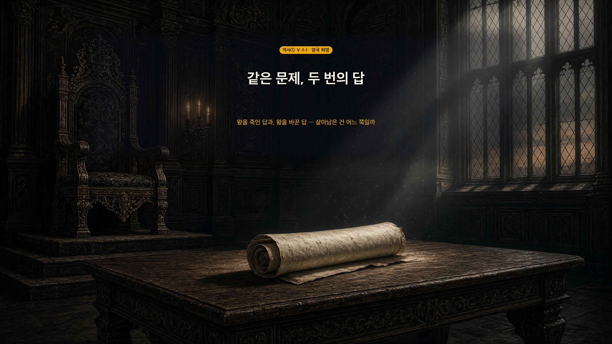

같은 문제, 두 번의 답
권리 청원 (1628) — 의회가 왕에게 던진 첫 제동. 핵심은 딱 한 문장이다.
청교도 혁명 (1642~1649) — 첫 번째 답. 왕을 죽였다.
| 누가 싸웠나 | |
|---|---|
| 의회파 | 청교도가 중심 · 크롬웰이 이끔 |
| 왕당파 | 국왕 찰스 1세 지지 |
명예혁명 (1688) — 두 번째 답. 왕을 바꿨다.
`제임스 2세 축출` → `메리 + 윌리엄 공동 왕` → `권리 장전 수용`
권리 장전 → 입헌 군주제 — 왕관에 조건이 붙었다.
| 조항 | 무엇을 막았나 |
|---|---|
| 제1조 | 법 — 의회 동의 없이 법을 정지·방해 못 함 |
| 제4조 | 돈 — 의회 승인 없이 세금 못 걷음 |
| 제6조 | 군대 — 의회 동의 없이 군대 못 모음 |

🎯 이 차시의 축 — 「같은 문제, 두 번의 답」. 문제는 하나다: 왕이 의회를 무시한다. 답이 두 번 나왔고, 첫 번째(청교도 혁명)는 사람을 바꿨고 두 번째(명예혁명)는 규칙을 바꿨다. 그래서 두 번째가 살아남았다. 이 대비를 잡으면 사건 암기가 아니라 하나의 이야기가 된다.
판서 한 줄: `왕이 의회 무시 → ①왕을 죽임(실패·크롬웰도 똑같이 함) → ②왕을 바꾸고 조건을 붊(성공·권리 장전)`
도입은 지도서 제안대로 — 영국 대관식 뉴스(연합뉴스TV 「70년만의 영국 국왕 대관식」)를 보여 주고 "왕이 있는데 왜 마음대로 못 하지?"를 던진다. 오늘 배울 것이 곧 그 답이다.
🎙️ 영국엔 지금도 왕이 있어. 대관식 뉴스 본 적 있지? 그런데 이상해 — 왕이 있는데 왕 마음대로 못 해. 법은 의회가 만들고, 세금도 의회가 정하고, 군대도 의회 허락이 있어야 하거든. 왕인데 왕이 아닌 셈이야. 언제 이렇게 됐을까? 오늘 그 이야기야. 17세기 영국에서 같은 문제를 두고 두 번 답이 나오는데, 첫 번째 답은 왕의 목을 잘랐고 두 번째 답은 피 한 방울 안 흘렸어.
- 청교도 혁명과 명예혁명의 전개 과정을 설명할 수 있다.
- 영국 혁명의 의의를 파악할 수 있다.
| 낱말 | 쉽게 말하면 | 한자 뜯어보기 | 문장 속에서 |
| 의회(議會) | 법을 만드는 사람들의 모임 | 의(議, 의논) + 회(會, 모임) | "찰스 1세가 의회를 무시하였다." |
| 청원(請願) | 들어 달라고 청하는 문서 | 청(請, 청함) + 원(願, 바람) | "의회가 권리 청원을 제출하였다." |
| 공화정(共和政) | 왕 없이 다스리는 정치 | 공(共, 함께) + 화(和, 어울림) | "찰스 1세를 처형하고 공화정을 세웠다." |
| 입헌(立憲) | 헌법을 세워 그 아래 두는 것 | 입(立, 세움) + 헌(憲, 법) | "입헌 군주제의 기초가 마련되었다." |
💡 오늘 딱 두 개만 잡자 — 권리 장전(무엇을 못 하게 했나)과 입헌 군주제(왕이 남았는데 뭐가 달라졌나).
17세기 영국에서는 시민 계급과 ①젠트리가 성장했다. 이들 가운데 많은 수의 ②청교도들이 의회에 진출했다.
(교과서 원문: "17세기 영국에서는 시민 계급과 젠트리가 성장하였고, 이들 가운데 많은 수의 청교도들이 의회에 진출하였다." — 비상교육 역사①(이병인) p.145)
(날개: "젠트리 귀족과 자영농 사이의 지주층으로, 토지를 바탕으로 농촌의 지도층이 되었다." / "청교도 영국에 거주하던 칼뱅파 신도를 말한다. 이들은 영국 국교회에 반대하여 칼뱅주의를 바탕으로 철저한 개혁을 주장하였다." — 같은 책 p.145)
🎯 젠트리·청교도를 용어 암기로 넘기지 말 것. 이 둘은 배경 설명이 아니라 원인이다. 젠트리 = 돈(토지) · 청교도 = 왕과 어긋난 신앙. 돈은 있는데 왕이 미운 사람들이 의회에 모였다는 조합이 뒤의 모든 사건을 만든다.
⚠️ 칼뱅주의·국교회의 교리 차이로 들어가지 말 것 — 교과서는 "영국 국교회에 반대"까지만 쓴다.
🎙️ 이 두 단어가 왜 먼저 나올까? 누가 의회에 앉아 있느냐가 뒤에 벌어질 모든 일을 결정하거든. 젠트리는 땅을 가진 사람들 — 돈이 있어. 청교도는 국교회에 반대한 사람들 — 왕과 종교가 안 맞아. 돈은 있는데 왕이 미운 사람들이 의회에 모인 거야. 이게 화약이야.
찰스 1세가 의회를 무시하고 청교도를 탄압하자, 의회는 "의회의 동의 없이 세금을 부과할 수 없다."라는 내용의 ③권리 청원을 제출했다. 찰스 1세는 이를 받아들였으나 곧 의회를 해산했다.
(교과서 원문: "이러한 상황에서 찰스 1세가 의회를 무시하고 청교도를 탄압하자, 의회는 "의회의 동의 없이 세금을 부과할 수 없다."라는 내용의 권리 청원을 제출하였다. 찰스 1세는 권리 청원을 받아들였으나 곧 의회를 해산하였다." — 같은 책 p.145)
🎯 지도서 지시: "권리 청원의 내용을 바탕으로 의회가 추구한 정치 체제를 파악하게 한다." 즉 조문을 외우는 게 아니라 "이 문장을 쓴 사람들은 어떤 나라를 원했나"를 묻는 자리다.
⚠️ OX 2번의 함정이 여기 있다 — 찰스 1세는 권리 청원을 거부하지 않았다. 받아들이고 나서 의회를 해산했다. 교과서가 "받아들였으나 곧"이라고 쓴 이유. 학생 다수가 "거부했다"로 기억한다.
⚠️ 여기가 시험 단골 — 의회가 처음 건 것은 자유도 신앙도 아니라 돈이었다. "세금을 우리 동의 없이 걷지 마라." 왕이 전쟁이든 뭐든 하려면 돈이 필요한데, 그 돈줄을 쥐겠다는 선언이야. 의회의 힘은 돈에서 나온다 — 이 문장이 오늘 내내 반복돼.
📖 읽고 답하기 — 원문을 안 보면 못 맞힌다
찰스 1세는 권리 청원을 받아들였을까, 거부했을까? 그리고 그 다음에 무엇을 했을까?
모범답안: 받아들였다. 그러고 나서 곧 의회를 해산했다.
🎯 이 한 줄이 이 차시의 오개념 1순위다. 학생 다수가 "거부해서 전쟁이 났다"로 기억한다(OX 2번과 같은 지점). 원문을 실제로 읽은 학생만 "받아들였다"를 쓴다 — 채점하지 말고 몇 명이 맞혔는지만 세어 읽기 여부를 가늠할 것.
의회가 반발하면서 청교도들이 중심이 된 ④의회파와 국왕을 지지하는 왕당파 사이에 내전이 일어났다. 크롬웰이 이끈 의회파는 전쟁에서 이긴 뒤 찰스 1세를 처형하고 ⑤공화정을 세웠다. 이를 청교도 혁명이라고 한다.
(교과서 원문: "의회가 이에 반발하면서 청교도들이 중심이 된 의회파와 국왕을 지지하는 왕당파 사이에 내전이 일어났다. 크롬웰이 이끈 의회파는 전쟁에서 승리한 후 찰스 1세를 처형하고 공화정을 세웠다(청교도 혁명, 1642~1649)." — 같은 책 p.145)
🎙️ 왕을 재판에 세워 목을 자른다. 이게 얼마나 충격이었을지 상상해 봐. 그때까지 왕은 신이 세운 사람이었어. 그런 왕을 자기 백성이 법정에 세워 사형시킨 거야. 유럽 전체가 숨을 삼켰어.
그러나 크롬웰은 의회를 해산하고 독재 정치를 펼쳐 국민의 지지를 잃었다.
(교과서 원문: "이후 크롬웰은 의회를 해산하고 독재 정치를 펼쳐 국민의 지지를 잃었다." — 같은 책 p.145)
🎯 여기가 이 차시 최대의 지도 포인트다. 교과서는 "크롬웰은 의회를 해산하고 독재 정치를 펼쳐 국민의 지지를 잃었다"를 한 문장으로 지나가지만, 이 문장이 없으면 명예혁명의 의미가 안 선다.
발문: "찰스 1세가 뭘 해서 목이 잘렸지?" → (의회를 해산해서) → "크롬웰은 뭘 했지?" → (의회를 해산했다) → "그럼 뭐가 달라진 거야?"
이 3연속 발문이면 학생이 스스로 "사람만 바뀌었다"에 도달한다. 그리고 그 순간 규칙을 바꾼 명예혁명이 왜 다른지가 준비된다.
⚠️ 교과서 밖 심화(호국경·왕정복고 1660 등)로 새지 말 것 — 필요한 것은 사실의 양이 아니라 대비다.
⚠️ 이 한 문장을 그냥 넘기지 마. 다시 읽어 봐 — 의회를 해산하고. 어디서 봤지? 찰스 1세가 한 짓과 똑같아. 왕이 의회를 무시해서 목을 잘랐는데, 그 왕을 죽인 사람이 똑같이 의회를 해산했어.
그래서 첫 번째 답은 실패야. 사람을 바꿨을 뿐 규칙을 안 바꿨거든.
📖 읽고 답하기 — 한 문장만 정확히 읽으면 된다
크롬웰이 한 일 가운데, 찰스 1세가 했던 것과 똑같은 행동은 무엇이었나?
모범답안: 의회를 해산했다.
🎯 4단계의 3연속 발문을 학생이 스스로 밟게 하는 자리다. 여기서 "의회 해산"이 나오면 명예혁명의 의미(규칙을 바꿨다)가 그 다음에 저절로 선다.
크롬웰이 죽자 다시 왕정이 시작되어 찰스 2세가 즉위했다. 찰스 2세와 그 뒤를 이은 제임스 2세도 의회를 무시하며 권력을 잡으려 했다. 이에 맞서 의회는 제임스 2세를 왕위에서 몰아내고, 그의 딸 메리와 남편 윌리엄을 공동 왕으로 세웠다. 이 사건을 ⑥명예혁명이라고 한다.
(교과서 원문: "크롬웰이 죽자 다시 왕정이 시작되어 찰스 2세가 즉위하였다. … 이에 맞서 의회는 제임스 2세를 왕위에서 몰아내고, 제임스 2세의 딸 메리와 그녀의 남편 윌리엄을 공동 왕으로 세웠다(명예혁명, 1688)." — 같은 책 p.145)
(날개: "명예혁명 피를 흘리지 않고 정치 형태를 바꾸었기 때문에 붙은 이름이다." — 같은 책 p.145)
🎙️ 이름에 답이 있어. 왜 '명예'일까? 날개 주석을 봐 — 피를 흘리지 않아서야. 앞에서 왕의 목을 잘랐던 그 나라가, 이번엔 왕을 갈아 끼우는 것으로 끝냈어.
그리고 결정적인 차이가 하나 더 있어. 이번엔 왕을 세우면서 조건을 붙였다는 거야.
이듬해 메리 여왕과 윌리엄 3세는 의회가 제출한 ⑦권리 장전을 받아들였다. 여기에는 의회에서 제정한 법이 국왕의 권력보다 앞선다는 내용이 담겨 있었다. 이로써 영국에서는 의회를 중심으로 한 ⑧입헌 군주제의 기초가 마련되었다.
(교과서 원문: "이듬해 메리 여왕과 윌리엄 3세는 의회가 제출한 권리 장전을 받아들였다. 권리 장전에는 의회에서 제정한 법이 국왕의 권력보다 앞선다는 내용이 담겨 있었다. 권리 장전이 받아들여짐으로써 영국에서는 의회를 중심으로 한 입헌 군주제의 기초가 마련되었다." — 같은 책 p.145)
🔍 그림에서 하나만 찾아보자 — 앉아 있는 두 사람의 머리 위를 봐. 무엇이 없지?
🎯 관찰 질문의 답 = 왕관이 없다. 두 사람은 아직 왕이 아니다. 왕관을 쓰기 전에 조건 문서부터 받고 있는 장면이다 — 교과서가 이 사진을 이 자리에 실은 이유가 그것이다.
⚠️ 학생이 "관을 안 썼네요"라고 말하면 바로 이어서: "그럼 왜 아직 안 썼을까?" → 조건을 받아들여야 왕이 될 수 있었기 때문.
제1조 국왕은 의회의 동의 없이 법의 효력을 정지하거나 법의 집행을 막을 수 없다.
제4조 국왕이 의회의 승인 없이 세금을 거두는 것은 위법이다.
제6조 의회의 동의 없이 왕국 내에서 군대를 모으거나 유지하는 것은 위법이다.
— 비상교육 역사①(이병인) p.145 사료
🎯 지도서 개별 탐구가 지정한 활동이다 — "권리 장전을 통해 입헌 군주제의 특징을 추론하게 한다." / "권리 장전에서 알 수 있는 국왕과 의회의 관계를 분석하게 한다." 활동 2가 이것을 그대로 구현한 것이므로 활동 전에 답(법·돈·군대)을 말하지 말 것.
입헌 군주제 정의는 "왕이 남았다"에서 출발한다. 학생은 흔히 "혁명 = 왕이 없어지는 것"으로 안다. 영국은 왕을 없애 봤다가 다시 두었고(4~5단계), 대신 법 아래 묶었다. 없애기보다 묶기가 오래갔다는 것이 이 차시의 결론.
연결: Ⅲ-3-4에서 백년 전쟁·장미 전쟁으로 왕권이 강해지는 과정을 배웠다. Ⅴ-1은 그렇게 강해진 왕권이 의회에 제동당하는 이야기다. 한 줄로 이어 주면 두 단원이 하나의 곡선이 된다.
💡 세 조항이 각각 무엇을 건드리는지 보이니? 법(1조) · 돈(4조) · 군대(6조)야. 나라를 움직이는 세 가지 힘 전부지. 그걸 전부 의회 동의 없이는 못 한다고 못 박았어.
왕은 그대로 있어. 왕관도 쓰고 궁전에도 살아. 그런데 법도 못 만들고, 돈도 못 걷고, 군대도 못 모아. 이게 입헌 군주제야 — 왕이 있되, 법 아래 있는 나라.
같은 문제(왕이 의회를 무시한다)에 두 번 답이 나왔어. 표를 채우며 무엇이 갈랐는지 찾아보자.
| 청교도 혁명 | 명예혁명 | |
| 왕을 어떻게 했나 | 처형했다(찰스 1세) | 몰아내고 새 왕을 세웠다(제임스 2세 축출 → 메리·윌리엄) |
| 피를 흘렸나 | 흘렸다 — 내전 끝에 처형 | 안 흘렸다 — 그래서 '명예'혁명 |
| 새 왕에게 조건이 붙었나 | 왕을 없애고 공화정 → 조건을 붙일 왕이 없었다 | 붙었다 — 권리 장전 수용이 조건 |
💬 두 번째 답이 살아남은 이유
모범답안: "청교도 혁명은 왕이라는 사람을 바꿨지만 크롬웰이 똑같이 의회를 해산했다. 명예혁명은 권리 장전으로 규칙을 바꿔, 누가 왕이 되든 의회 동의 없이는 법·세금·군대를 다룰 수 없게 했기 때문이다."
채점: 사람 vs 규칙(또는 권리 장전으로 조건을 붙였다)이 들어가면 인정. "피를 안 흘려서"만 쓰면 중 — 그건 이름의 유래이지 살아남은 이유가 아니다.
위 사료를 다시 보고, 각 조항이 국왕에게서 무엇을 빼앗았는지 한 낱말로 써 보자.
| 조항 | 빼앗은 것 |
| 제1조 — 법의 효력을 정지하거나 집행을 막을 수 없다 | 법 |
| 제4조 — 승인 없이 세금을 거두는 것은 위법이다 | 돈(세금) |
| 제6조 — 동의 없이 군대를 모으거나 유지할 수 없다 | 군대 |
🎯 한 낱말로 쓰게 하는 것이 핵심이다. 문장으로 쓰게 하면 조문을 베낀다. 법·돈·군대 세 낱말이 칠판에 나란히 서는 순간 "나라를 움직이는 힘 전부"가 보인다.
이어지는 발문: "이 셋을 다 빼면 왕에게 뭐가 남지?" → 학생이 "이름만 남는다"에 가까운 말을 하면 입헌 군주제가 설명된 것이다.
| 번호 | 문장 | O / X |
| 1 | 권리 청원의 핵심은 의회 동의 없이 세금을 부과할 수 없다는 것이다. | O |
| 2 | 찰스 1세는 권리 청원을 거부하여 내전이 일어났다. | X |
| 3 | 크롬웰은 공화정을 세운 뒤에도 의회를 존중하며 정치하였다. | X |
| 4 | 명예혁명은 피를 흘리지 않고 정치 형태를 바꾸어 붙은 이름이다. | O |
| 5 | 권리 장전이 받아들여지면서 영국에 입헌 군주제의 기초가 마련되었다. | O |
해설
1. O — 권리 청원의 핵심 문장 그대로.
2. X — ⚠️ 거부한 것이 아니다. 받아들였고, 그 뒤 의회를 해산해서 내전이 났다. 가장 많이 틀리는 문항.
3. X — 크롬웰도 의회를 해산하고 독재를 펼쳐 지지를 잃었다. 이 차시의 반전 지점.
4. O — 날개 주석 그대로.
5. O — "의회를 중심으로 한 입헌 군주제의 기초가 마련되었다."
오늘 배운 걸 안 보고 세 줄로 적어 보자. 틀려도 괜찮아 — 떠올리려고 애쓰는 그 순간에 머리에 박히는 거야.
1.
2.
3.
영국은 왕을 없애 봤다가(공화정) 다시 두기로 했어. 대신 왕에게 조건을 붙였지.
왕을 아예 없애는 것과, 두되 법 아래 묶어 두는 것 — 너는 어느 쪽이 더 나은 답이라고 생각해?
그렇게 생각하는 이유를 오늘 배운 사실(권리 장전·크롬웰 독재 중 하나 이상)을 근거로 들어 써 보자.
| 수준 | 판단 기준 |
| 상 | 한쪽을 택하고 오늘 배운 사실을 근거로 들었다. 예 — 묶기 쪽: "왕을 없앴더니 크롬웰이 똑같이 독재했다. 사람을 바꾸는 것보다 권리 장전처럼 규칙을 거는 편이 오래간다." / 없애기 쪽: "권리 장전이 있어도 왕은 남았고, 왕이 있는 한 언제든 제임스 2세 같은 사람이 또 나올 수 있다." |
| 중 | 한쪽을 택했으나 근거가 일반론("왕은 나쁘니까"·"전통이 중요하니까")에 머문다. |
| 하 | 택하지 않았거나, 배운 사실과 무관한 서술. |
🎯 결론이 아니라 근거를 본다. 없애기를 택해도 상이 될 수 있다 — 실제로 프랑스는 다음 차시들에서 그 길로 간다.
세특 연결: "사람을 바꾸는 것과 규칙을 바꾸는 것의 차이"까지 짚은 학생은 제도의 작동 방식을 읽어 낸 사례로 기록할 만하다. 이 서술은 `essay-N`으로 수합된다.
다음 차시 연결: 미국 식민지가 곧 "우리 동의 없이 세금을 걷지 마라"라고 말한다 — 권리 청원과 같은 문장이다. 오늘 2단계를 다음 시간에 반드시 회수할 것.
영국에서 벌어진 이 일을 바다 건너에서 지켜본 사람들이 있었어. 아메리카의 식민지 사람들이야. 그들도 곧 같은 말을 하기 시작해 — "우리 동의 없이 세금을 걷지 마라." 다음 시간 「미국 혁명이 일어나다」.